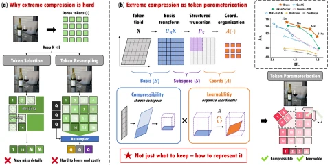

Beyond Selection: Token Parameterization for Extreme Visual Token Compression
NeurIPS 2026
The Fortieth Annual Conference on Neural Information Processing Systems
Citation
@inproceedings{zhong2026braco,
title={Beyond Selection: Token Parameterization for Extreme Visual Token Compression},
author={Zhong, Rui and Li, Yu and Yan, Zheyu and Zhuo, Cheng},
booktitle={Advances in Neural Information Processing Systems},
year={2026}
}